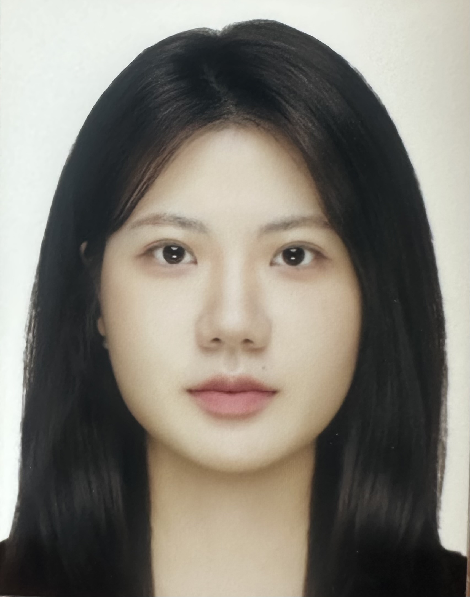

Sungkyunkwan University
Jiin Han
한지인
Integrated MS–PhD Researcher (Prof. Yunseok Choi)

Research
Multimodal Learning
Large Language Models Reasoning
Table Visual Question Answering
Document Visual Question Answering
Education
University of Oslo
Visiting PhD Student, DSB group — Digital Signal Processing & Image Analysis
2026.06 –
Sungkyunkwan University
Integrated MS–PhD, Immersive Media Engineering
2025.03 –
Hankuk University of Foreign Studies
MS, Artificial Convergence
2023.09 – 2024.08
Hankuk University of Foreign Studies
BS, Linguistics & Cognitive Science · BS, Statistics
2020.03 – 2023.02
Experience
TwigFarm
NLP Researcher · multimodal machine translation, OCR
2022.10 – 2023.03
Digital Language & Knowledge Contents Research Center
Research Assistant · Korean NLP, POS tagging & dependency datasets
2022.12 – 2023.03
Digital Language & Knowledge Contents Research Center
Research Assistant · corpus building, DECO dictionary
2020.07 – 2020.10
Publications
PubTables-QA: A Benchmark Toward Cross-Page Table Reasoning in Table Visual Question Answering
Jiin Han
, S. Bae, Y. Choi, S. Lee, K. Kim, R. Kim, J.-H. Lee, C. Choi, Y. Choi ·
KDD 2026 Workshop (RespMultimodal)
SPIN-SQL: Stepwise Perturbation with In-Context Prompting for Robustness Evaluation of Text-to-SQL Models
Kangmin Lee,
Jiin Han
, Yunseok Choi ·
KAIA 2025
Development of Literature Short-Form System using Emotional Keyword
S.W. Roh, S.C. Kim, T.H. Kim, J.W. Bae,
J.I. Han
, S.J. Oh, I.C. Doo ·
CSA 2022
Awards
2025.08
2nd place, 2025 Chungbuk Public Data Utilization Startup Competition
Chungbuk Institute of Science and Technology Innovation
2024.04
Best Idea Award, 2024 ALAK Workshop & My GPTs Challenge
Applied Linguistics Association of Korea
2023.11
Encouragement Award, 2023 Tourism Data Utilization Contest
Korea Tourism Organization
2023.08
3rd place (KEPCO KPS President Award), 11th Public Data Utilization Business Idea Contest
Ministry of Trade, Industry and Energy
2022.11
3rd place, Artificial Intelligence Idea Festival
Hankuk University of Foreign Studies
Skills
Programming / Deep Learning
NumPy, Pandas, Scikit-learn · BERT/Transformer fine-tuning · training & fine-tuning LLMs
Data Analysis
R, SPSS, SAS · data mining and statistical analysis
Linux
Shell scripting · Docker build
Languages
Korean (native) · English (fluent)
Elsewhere
jiin.han@skku.edu
ORCID
GitHub
Google Scholar